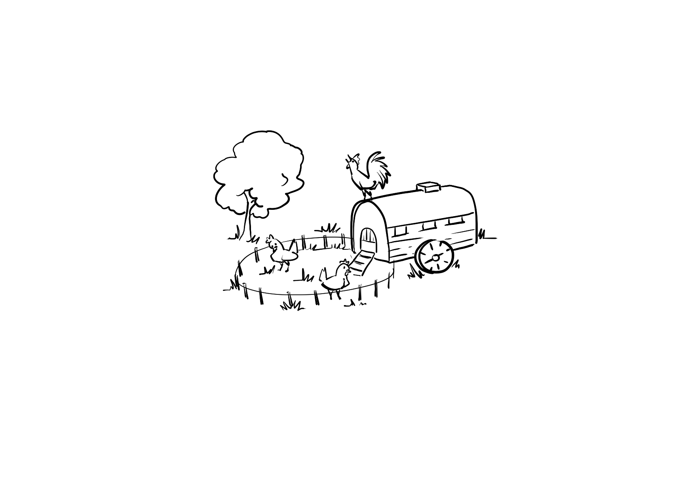
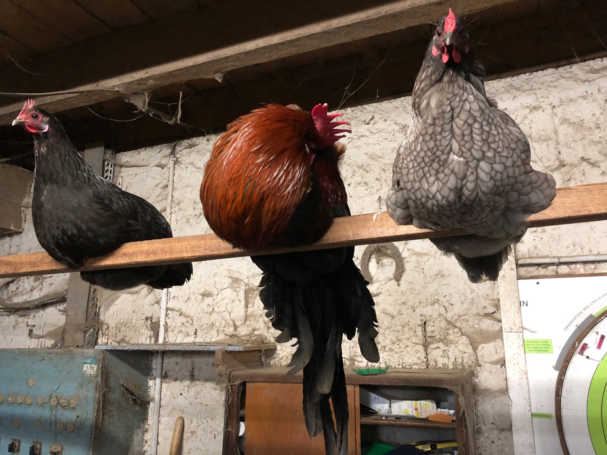
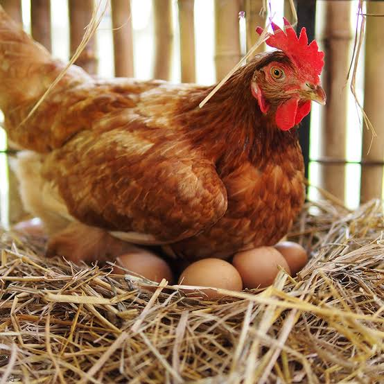

Un poulailler sur roues 🚜
Avez-vous remarqué les roues sur notre dessin ? Ce n'est pas un hasard ! Nous avons fait le choix d'un poulailler mobile, une technique ingénieuse inspirée de l'agriculture régénératrice.
Au lieu de rester sur un terrain fixe qui finirait par s'épuiser et se transformer en boue, notre poulailler est déplacé régulièrement sur nos prairies. Ainsi, nos poules pondeuses découvrent chaque semaine un nouveau carré d'herbe fraîche et un environnement sain.
Des œufs aux jaunes éclatants 🥚
En étant constamment en mouvement, nos poules profitent d'une alimentation exceptionnellement riche et variée. Elles passent leurs journées à gratter le sol pour dénicher des insectes, des vers et de jeunes pousses de trèfle.
C'est cette alimentation 100 % naturelle, complétée par des céréales biologiques, qui donne à nos œufs cette saveur unique et leurs jaunes d'un orange si profond. Le vrai goût de l'œuf de ferme !
Les petites ouvrières du sol 🌱
Dans notre écosystème, les poules sont de véritables alliées ! En suivant souvent les ruminants sur les prairies, elles agissent comme des agents sanitaires naturels en picorant les parasites présents dans l'herbe.
De plus, grâce à leurs fientes riches en azote, elles fertilisent naturellement le sol après leur passage. C'est un cercle vertueux où chaque animal contribue à la santé de notre terre.

